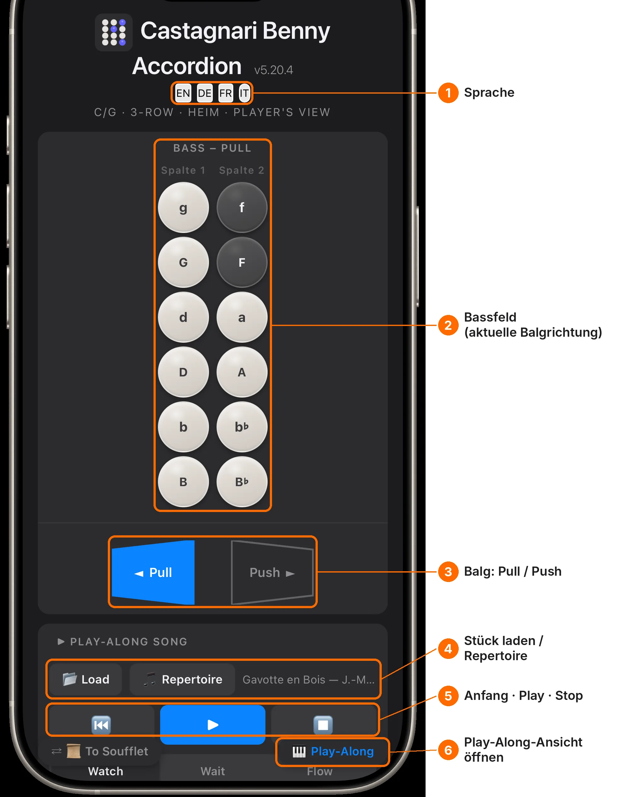

1 · Hauptansicht
Oben stellst du Sprache und Balgrichtung ein, unten steuerst du das Übungsstück.


- Sprache – EN · DE · FR · IT.
- Bassfeld – zeigt die Bässe der aktuellen Balgrichtung in zwei Spalten; dunkle Knöpfe sind aktiv.
- Balg – Pull / Push umschalten; Bass- und Diskantbelegung wechseln mit.
- Load öffnet eine eigene MusicXML- oder MIDI-Datei, Repertoire die kuratierte Stückliste mit Benny-Fit-Ampel (grün = rein diatonisch bis rot = chromatisch).
- Transport – zum Anfang · Play/Pause · Stop.
- Play-Along – wechselt in die Übungsansicht mit Bass und Diskant nebeneinander.
Im Song-Panel darunter (nicht im Bild): Tempo in bpm, Metronom mit einem Takt Einzählen, und Zuhören – im Wait-Modus rückt Benny dann per Mikrofon vor, sobald du am echten Instrument den richtigen Ton spielst.